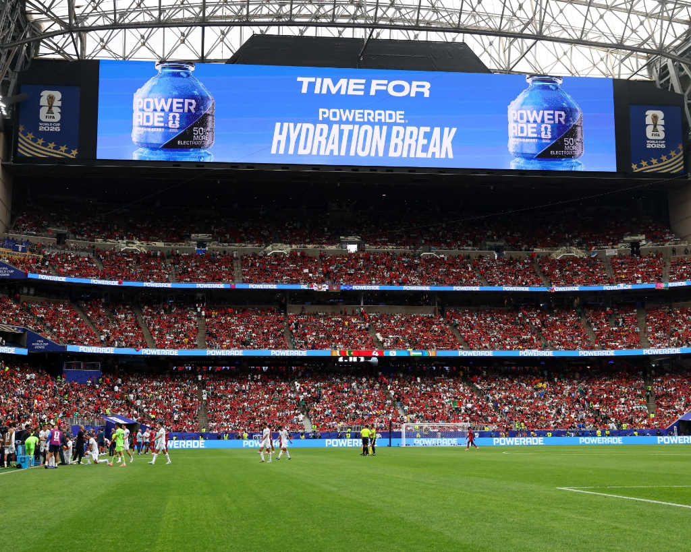

Project Overview
The FIFA World Cup is the biggest sporting event on the planet, breaking viewership and social engagement records.
During its latest edition in June and July 2026, controversy arose over the use of hydration breaks for commercial advertising. While companies found a new window to advertise their products, fans strongly resented the pauses that disrupted the flow of the game, with audible boos heard in several matches whenever hydration breaks were whistled. For coaching staffs, these intervals were capitalized on to deliver tactical adjustments. As for the players—the primary reason for the breaks—they took advantage of the moments to rehydrate and restore energy while taking in tactical instructions.

Portugal v Uzbekistan, played in an air-conditioned stadium, is paused for a hydration break. Photograph: Chris Brunskill/Fantasista/Getty Images
As a football fan who followed the tournament closely, a recurring theme began to emerge: goals being scored in the minutes immediately following hydration breaks (e.g., USA vs. Paraguay, Australia vs. Turkey, or Germany vs. Curaçao). This pattern raised the central question of this project: what is the actual impact of hydration breaks on match dynamics?
Data Collection
Gathering the right data proved to be one of the main challenges of this project. The official data published by FIFA was limited to key match events and contained no information about hydration break timestamps, making it impossible to directly identify when breaks occurred or how long they lasted.
Fortunately, I found a project developed by Jose David Chiquillo, who collected a real-time dataset across the entire competition, creating a detailed chronological record of each match. This data includes game state snapshots collected at regular intervals, capturing a wide range of match variables over time, as well as discrete events throughout each game.
During the data analysis, although there was no direct reference to hydration break timestamps, the following algorithm was applied to each match to identify those moments: between minutes 20–30 and minutes 65–75, check whether a stoppage lasting longer than 2 minutes occurred (breaks were scheduled around the 22nd minute of each half with an expected duration of 3 minutes). If only a single result was returned within that window, it was identified as the hydration break; otherwise, another prolonged interruption might have occurred—such as a player injury—requiring cross-referencing with other sources.
Out of a total of 104 matches, one game lacked recorded data (Brazil vs. Norway). Across the remaining 103 matches, hydration breaks meeting the previously described criteria were identified in both halves, and each pause was adjusted to its actual duration along with its start and end minutes. Exceptions and uncertainties arose only in the following fixtures:
- Mexico vs. South Africa: the second-half break lasted only 1:35 (69:01–70:36).
- France vs. Iraq: there were no break markers and no stoppage exceeding 83 seconds.
- Spain vs. Cape Verde: the feed contained no events between 17:30 and 26:46, recording only the “gameon” event at 26:46. As a result, the first-half hydration break could not be accounted for and was excluded from the analysis.

Sample of the analyzed matches with identified hydration break start, end, and duration timestamps.
In the Mexico vs. South Africa match, external information revealed that the second-half hydration break took place immediately following a goal, which curiously sparked controversy as broadcast commercials ran longer than expected.
In the France vs. Iraq match, a kickoff delay occurred before the game, and it was decided that the second half would not feature a hydration break. As a result, the second half of this match was not included in the analysis.
Statistical Analysis
A total of 102 first and second halves were analyzed out of a potential of 104 matches. 46 variables were compared across each half. A comparison window of 5 and 10 minutes before and after each hydration break was defined to analyze differences in match variables. The statistical test used was the Wilcoxon signed-rank test with p < 0.05.
The results obtained are presented below:
Results with statistical significance.
At 5 minutes after vs. 5 minutes before: * Match intensity drops 18% (p = 0.0002) * Pass accuracy drops 2.9% (p = 0.0004) * Aerial duels increase by 30% (p = 0.0003) * Goal kicks by 51% (p = 0.004) * Fouls rise (+25%, p = 0.04) * Accurate passes decrease by 10% (p = 0.015).
At 10 minutes after vs. 10 minutes before: * Corners decrease by 31% (p = 0.0001) * Pass accuracy drops 2.1% (p = 0.0003) * Throw-ins increase by 19% (p = 0.004) * Match intensity drops 10.5% (p = 0.014) * Aerial duels increase by 16% (p = 0.010)
Results for indicators related to offensive dynamics, with no statistically significant differences.
None of the goal or chance-creation variables shows a significant change after the break, at 5 or at 10 minutes (all p ≥ 0.05). The closest is touches in the box at 5 minutes (−16%, p = 0.083).